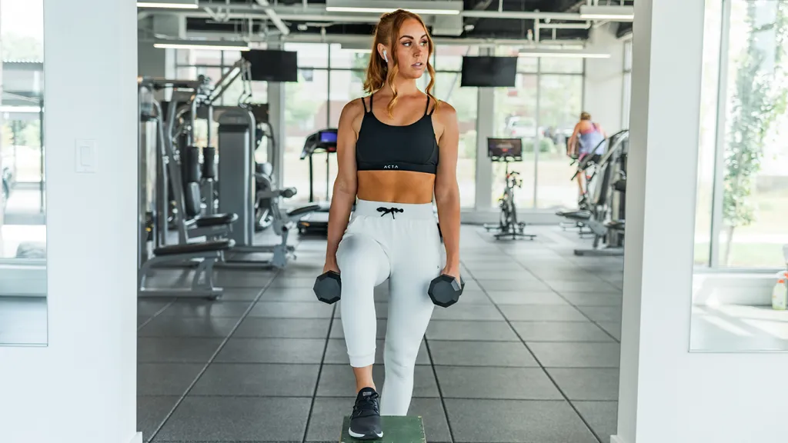

If you’re wondering how to get lean, it’s a matter of commitment. Sticking to a lean diet and a good training plan will help you lose weight and define your muscles. Follow our five day plan to start seeing results
Exercise Reps Sets Barbell Deadlift 12,10,8,6,12 5 Barbell Front Squats (triple set with 2 below) 10 3 Burpee to Jump 10 3 Step-up/Raise Knee (same leg) 10 3 Cable Chest Fly (triple set with 2 below) 10 3 Cable Chest Press 10 3 Clap Press Ups 10 3 Kettlebell Rows (triple set with 2 below) 10 3 Inverted Body Rows 10 3 Dumbbell Curls 10 3 Cable Slow Crunch 10 to 12 3 Plank 45 sec to 1 min 3 Treadmill Sprints 20 sec sprint, 10 sec rest 6 to 8
Exercise Reps Sets Wide Grip Chin Ups (super set with below) To Failure 3 Gorilla Press Up To Failure 3 Bench Press 12,10,8,6,12 5 Narrow grip lat pull down 12,10,8,6,12 5 Kettle Bell Rows (superset with below) 20 3 Dumbbell Chest Press plus rotation 10 3 Dumbbell Fly to hammer grip press combo (superset with below) 10 3 High cable rows 10 3 Dumbbell Pullovers (superset with below) 10 3 Dips 10 3 Treadmill Sprints 20 sec sprint, 10 sec rest 6 to 8 Plank 45 sec to 1 min 3 Treadmill Sprints 20 sec sprint, 10 sec rest 6 to 8
Exercise Reps Sets Barbell Squats 12,10,8,6,12 3 Plyometric Box Jumps (superset with below) 15 3 Dumbbell Walking Lunges (triple set with two below) 10 3 Dumbbell curl to shoulder press 10 3 Dumbbell Jump Squat 10 3 Cable Low to high woodchops (triple set with two below) 10 3 Medicine Ball Crunch 10 3 Arm Get-ups to press-up combo 10 3 TRX Plank Hold (triple set with two below) 1 min 3 TRX Jacknifes 15 to 20 3 RX Pendulums 20 3 Treadmill Sprints 20 sec sprint, 10 sec rest 6 to 8 Treadmill Sprints 20 sec sprint, 10 sec rest 6 to 8
Exercise Reps Sets Dumbbell Incline Chest Press 12,10,8,6,12 5 Barbell clean and press 12,10,8,6,12 5 Bench Press (superset with below) 10 3 Seated Arnold Press 10 3 Decline Bench (superset with below) 10 3 Barbell upright row 10 3 Staggered power press-ups (superset with below) 10 3 Dumbbell lat raise & front raise combo 10 3 Close grip press-ups (superset with below) To Failure 3 TRX Body Rows To Failure 3 Treadmill Sprints 20 sec sprint, 10 sec rest 6 to 8
Exercise Reps Sets Weighted Cable Crunch 12,10,8,6,12 5 BTRX Plank Drifting (superset with below) 10 3 TRX Pike 10 3 Cable Transverse Twists (superset with below) 10 3 SB Roll Outs 10 3 Dumbbell prone (press-up position) flyes (superset with below) 10 3 Bosu press-ups To Failure 3 Medicine Ball Crunches (superset with below) 10 3 Plank To Failure 3 Treadmill Sprints 20 sec sprint, 10 sec rest 6 to 8